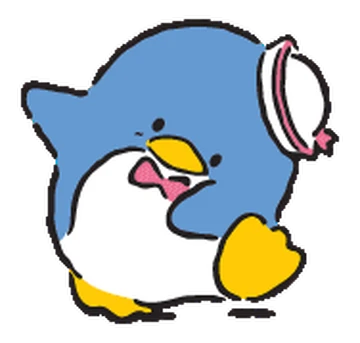
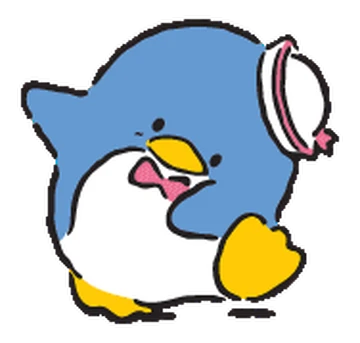
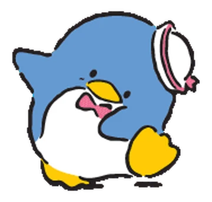

Primeiramente ja gostaria de dizer que sou horrivel com textos, provavelmente vai ficar uma merda, mas saiba que eu tentei ok, não vou me atentar taanto com erros de portugues pq eu não sei nem concordancia verbal basica. Eu queria dizer que você foi uma das melhores pessoas que eu conheci no ano passado, eu adoro conversar com voce, mesmo vc do nada ficando extremamente dramatica... Mas como eu tambem fico, é uma troca justa, então sem julgamentos! Eu acho incrivel que tem dias que eu sou extremamente chato e mesmo assim vc me aguenta, eu gosto muito dos tempos que a gente passa junto, seja no mine, roblox ou ate mesmo no rave vendo filme ruim cheio de putaria q vc escolhe ver, independente do que seja, eu gosto desse tempo, mesmo as vezes tendo uma vergonha extrema de ir call, eu adoro ouvir sua voz, voce poderia me mandar audio o dia inteiro que eu nao reclamaria, pena que as vezes voce pede audio de volta e ate coiso de vergonha, mas quase sempre eu consigo! As vezes eu fico pensando naquilo que voce disse sobre as suas amizades nao durarem tanto tempo, e eu realmente nao quero perder sua amizade por nada que aconteça, mesmo que nossos gostos provavelmente fiquem um pouco mais distintos com o tempo, voce consegue ter alguns assuntos aleatorios que normalmente rendem bastante conversa. E saiba que eu nunca vou querer te deixar mal, nao importa o que aconteça, eu provavelmente ja disse isso em alguma crise sua, mas eu sempre vou estar disponivel pra te ajudar, nao importa o assunto, eu posso nao poder fazer nada na hora por conta da distancia, mas eu vou estar la pra te ouvir desabafar, ou ate mesmo se por algum motivo a gente acabe se afastando um pouco, independente do que aconteça, se voce ficar triste ou mal com algo, é só me mandar mensagem que eu vou responder o mais rapido que eu conseguir. Por falar nisso, é ate um pouco estranho voce responder quase sempre na mesma hora que eu mando mensagem, é algo que poucas pessoas que eu conheci faziam (isso é bom ok), isso deixa a conversa mt melhor e me motiva a continuar ela. Eu sei que as vezes fico um pouco sem assunto por nao fazer muita coisa interessante no dia a dia, mas mesmo sem assunto nenhum, eu acho mt fofo quando voce só manda uma figurinha/emoji aleatorio só pra tentar puxar algo, significa q voce tambem gosta da conversa, ou pelo menos eu espero isso... enfim, como eu disse eu sou bem ruim com palavras e não sei me expressar direito, mas eu te adoro bastante, mesmo te xingando e te humilhando varias vezes por dia, é tudo com carinho, eu provavelmennte fugi varias vezes do tema que eu estava tentando falar, mas é isso, espero que tenha gostado do presente <3
